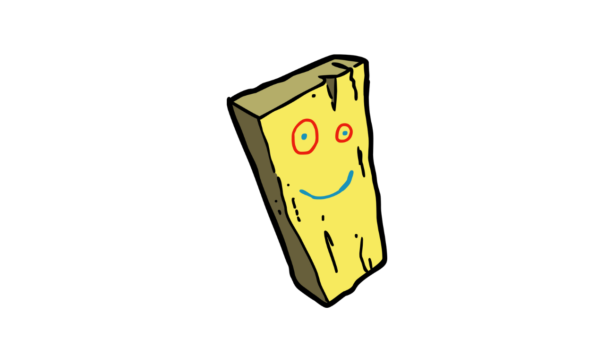

En este artículo aprenderemos a realizar tablas o tabulaciones en R de manera eficiente.

En esta sesión explicaré como realizar tablas o tabulaciones para
publicaciones académicas ya sea en formato .html (web) o
.docx (Word). Comencemos.
Para ello necesitaremos tener instalados y desplegados los siguientes paquetes:
pacman::p_load(
#manipulación de data
tidyverse,
#importar exportar data
haven, rio,
#tablas
flextable, gtsummary,
#etiquetas
sjlabelled
)
Asimismo, utilizaremos la data de prueba alojada en el paquete
{sjlabelled} denominada efc que es una muestra
de la base de datos del proyecto EUROFAMCARE:
data(efc)
Esta data tiene la particularidad de tener variable label y value label que es metadata acerca de la variable y sus categorías. Esta data tiene 26 variables y 908 observaciones.
[1] "c12hour" "e15relat" "e16sex" "e17age" "e42dep" "c82cop1"
[7] "c83cop2" "c84cop3" "c85cop4" "c86cop5" "c87cop6" "c88cop7"
[13] "c89cop8" "c90cop9" "c160age" "c161sex" "c172code" "c175empl"
[19] "barthtot" "neg_c_7" "pos_v_4" "quol_5" "resttotn" "tot_sc_e"
[25] "n4pstu" "nur_pst" Si observamos la metadata de las cinco primeras variables veremos lo siguiente:
| ID | Name | Label | Values | Value Labels |
|---|---|---|---|---|
| 1 | c12hour | average number of hours of care per week | range: 4-168 | |
| 2 | e15relat | relationship to elder |
1 2 3 4 5 6 7 8 |
spouse/partner child sibling daughter or son -in-law ancle/aunt nephew/niece cousin other, specify |
| 3 | e16sex | elder’s gender |
1 2 |
male female |
| 4 | e17age | elder’ age | range: 65-103 | |
| 5 | e42dep | elder’s dependency |
1 2 3 4 |
independent slightly dependent moderately dependent severely dependent |
En name se encuentra el nombre de la variable que aparece en
la base de datos (ej: efc$c12hour), en label
podemos observar la etiqueta de la variable que precisa una descripción
de la variable (ej: elder's gender), en values
observamos los valores que aparece en la base de datos (ej:
1), y en value labels podemos observar la etiqueta
de los valores que precisa una descripción de los valores (ej:
male).
De esta manera, si vemos un preview de la base de datos veremos lo siguiente:
Sin embargo, si queremos observar las etiquetas de los valores en la
misma data podemos utilizar la función as_label() del
paquete {sjlabelled}:
Esta función nos será útil en nuestro proceso de construcción de las tablas.
La principal función de R base para hacer tablas es
table() y nos permite realizar tablas simples de
frecuencia. Por ejemplo:
Por suerte, actualmente existen paquetes que realizan un mejor trabajo en la construcción de tablas.
El paquete {gtsummary} está basado a su vez en el
paquete {gt} y nos permite realizar tablas que se
renderizan bien en documento HTML, es decir, para la web. Por
ejemplo:
efc %>%
as_label() %>%
gtsummary::tbl_summary(include=e16sex)
| Characteristic | N = 9081 |
|---|---|
| elder's gender | |
| male | 296 (33%) |
| female | 605 (67%) |
| Unknown | 7 |
| 1 n (%) | |
Como podemos observar, este tipo de tablas nos permite contar con los datos de frecuencia, porcentaje, número total de casos de la base, inclusive cuántos valores perdidos tenemos (en este caso 7). Asimismo, nos permite realizar una tabla cruzada con otra variable.
efc %>%
as_label() %>%
gtsummary::tbl_summary(include=e16sex, by=e42dep)
| Characteristic | independent, N = 661 | slightly dependent, N = 2251 | moderately dependent, N = 3061 | severely dependent, N = 3041 |
|---|---|---|---|---|
| elder's gender | ||||
| male | 23 (35%) | 70 (31%) | 109 (36%) | 93 (31%) |
| female | 43 (65%) | 154 (69%) | 197 (64%) | 211 (69%) |
| Unknown | 0 | 1 | 0 | 0 |
| 1 n (%) | ||||
La versatilidad de este paquete nos permite insertar una columna de totales y darle un formato específico a los porcentajes:
efc %>%
as_label() %>%
gtsummary::tbl_summary(
include=e16sex,
by=e42dep,
statistic = list(all_categorical() ~ "{p}%"),
digits = list(everything() ~ 2)
) %>%
add_overall()
| Characteristic | Overall, N = 9011 | independent, N = 661 | slightly dependent, N = 2251 | moderately dependent, N = 3061 | severely dependent, N = 3041 |
|---|---|---|---|---|---|
| elder's gender | |||||
| male | 32.78% | 34.85% | 31.25% | 35.62% | 30.59% |
| female | 67.22% | 65.15% | 68.75% | 64.38% | 69.41% |
| Unknown | 1 | 0 | 1 | 0 | 0 |
| 1 % | |||||
Otro aspecto positivo del paquete {gtsummary} es que nos
permite convertir las tablas HTML en otros formatos más adecuados para
documentos PDF y Word como son las tablas del paquete
{flextable}. De esta manera, podemos realizar una tabla de
cruces en {gtsummary} y luego convertirla a
{flextable}:
efc %>%
as_label() %>%
gtsummary::tbl_summary(
include=e16sex,
by=e42dep,
statistic = list(all_categorical() ~ "{p}%"),
digits = list(everything() ~ 2)
) %>%
add_overall() %>%
as_flex_table()
Characteristic | Overall, N = 9011 | independent, N = 661 | slightly dependent, N = 2251 | moderately dependent, N = 3061 | severely dependent, N = 3041 |
elder's gender | |||||
male | 32.78% | 34.85% | 31.25% | 35.62% | 30.59% |
female | 67.22% | 65.15% | 68.75% | 64.38% | 69.41% |
Unknown | 1 | 0 | 1 | 0 | 0 |
1% | |||||
Por último, el mismo paquete {flextable} brinda
funciones para generar tablas flextable desde el inicio, antes que
convertir las tablas del paquete {gtsummary}. Las tablas
{flextable} tienen sus propias ventajas como, por ejemplo,
darle un formato condicional a los colores de la tabla:
efc %>%
as_label() %>%
group_by(e16sex, e42dep) %>%
drop_na() %>%
summarise(n=n()) %>%
group_by(e42dep) %>%
mutate(n=janitor::round_half_up(n/sum(n)*100, 2)) %>%
pivot_wider(values_from = n, names_from = e42dep) %>%
flextable() %>%
bg(i = ~independent > 65,
j = 2,
bg = "red",
part = "body") %>%
bg(i = ~`slightly dependent` > 65,
j = 3,
bg = "red",
part = "body") %>%
bg(i = ~`moderately dependent` > 65,
j = 4,
bg = "red",
part = "body") %>%
bg(i = ~`severely dependent` > 65,
j = 5,
bg = "red",
part = "body")
e16sex | independent | slightly dependent | moderately dependent | severely dependent |
male | 34.62 | 36.99 | 32.64 | 34.94 |
female | 65.38 | 63.01 | 67.36 | 65.06 |
En este ejemplo, le estamos indicando a flextable que si el valor de la celda es mayor a 65% entonces que lo coloree de rojo.
Más recursos para aprender: